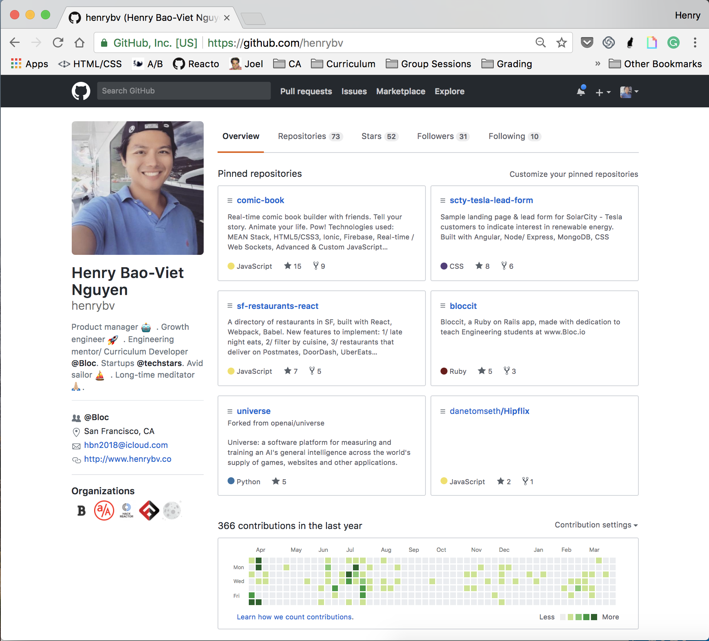
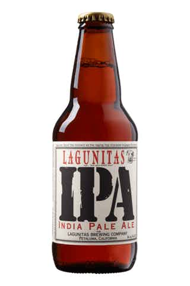
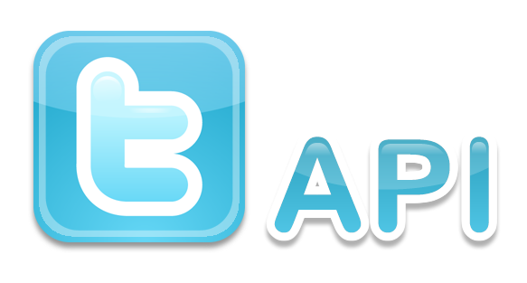
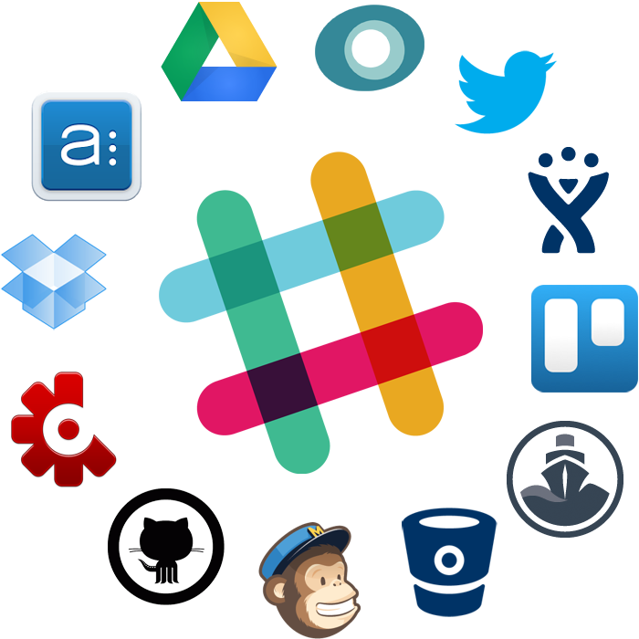
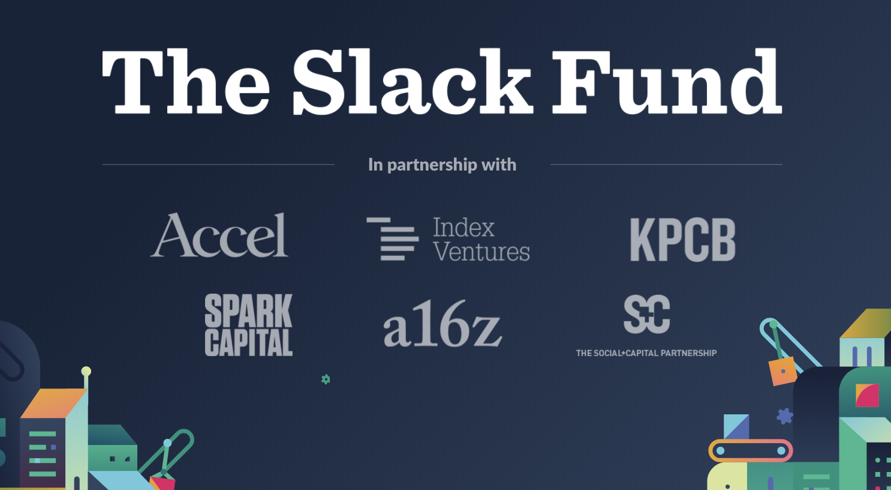
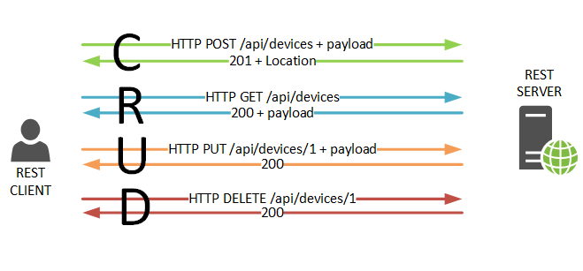
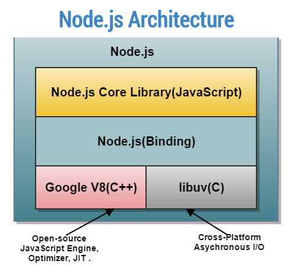

What is an API?
github/henrybv
Overview
- Definition: What is an API?
- Examples & Use Cases of popular APIs
- How does a (web) API work under the hood?
- Step-by-step guide to use an API in your project
Expectations
- You should have at least a basic understanding of JavaScript 👍
- Please particpate by answering my questions 😺
Links
What is an API?
Application Programming Interface
A software intermediary that allows two applications to talk to each other.
We live in an API economy
- 90% of world's data created past 2 years.
- 75 B internet connected devices by 2020
- Business data becomes invaluable.

”In the world of cloud computing, API’s are the NEW currency”
– S.Somasegar, VP of Microsoft’s developer division.
Examples and Use Cases of popular APIs
Uber API

Sign Up as Developer
Follow Uber API platform community
Slack API
Slack Fund
How do APIs work under the hood?
RESTful API

REST
"REST = Representational State Transfer: "architecture for networked applications", set of standards that describe how computers should communicate with each other and with applications across a network"
REST
- Follows HTTP protocol
- Defines specific operations the application does to satisfy CRUD (create, read, update, delete) requirements.
APIs = endpoints to do a task when someone requests them
APIs consists of three parts
- User: the person who makes a request
- Request: the computer that sends the request to the server
- Response: the computer that responds to the request
Major actions with an
- GET: to fetch data
- POST: to edit existing data
- PUT: to add new data
- DELETE: to delete data
The Event Loop

What lies under the hood?

Questions?
Node modules
A module is a set of functions or a block of code to include in your application. Node modules ~ "JavaScript libraries".
Node module demo
Before starting, we can set up a new directory and create the necessary files for this project.
Setting Up
```
$ mkdir node-greeting-app
$ cd node-greeting-app
$ touch greeting.js
$ touch main.js
```
greeting.js
We'll create a Node module in `greeting.js`. Add the following lines of code:
```JavaScript(greeting.js)
module.exports = {
greetingEnglish: function() {
console.log("Hello");
},
greetingJapanese: function() {
console.log("Konichiwa");
}
};
The `module.exports` keyword makes properties and methods available outside the module file.
main.js
The keyword `require` is used in Node to import modules. Now, `main.js` has access to the methods `greetingEnglish` and `greetingJapanese`.
```JavaScript(main.js)
const greetings = require("./greeting.js");
// "Hello"
greetings.greetingEnglish();
// "Bonjour"
greetings.greetingFrench);
```
Your first Node module
To test our module, run `node main.js` in the terminal in the `node-greeting-app` directory. You should see the following output in your terminal.
```
Hello
Bonjour
```
NPM
- The package manager for JavaScript, currently the largest software registry in the world
- Provides a way to distribute libraries or modules throughout the internet
- Makes it easy to share your custom modules and access other modules in your projects